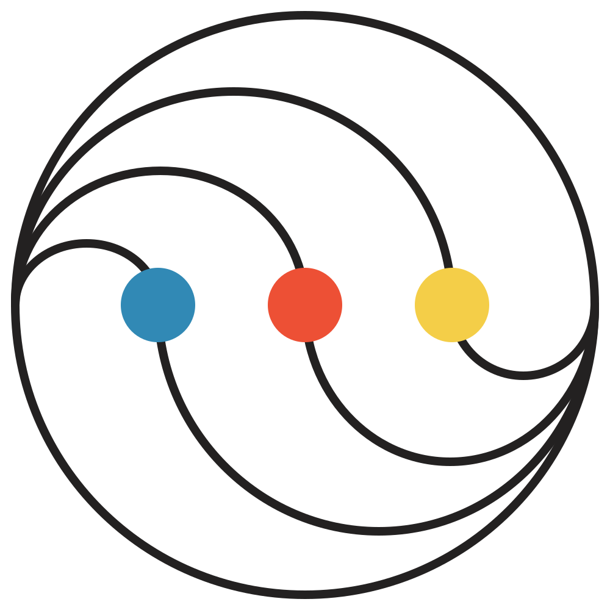
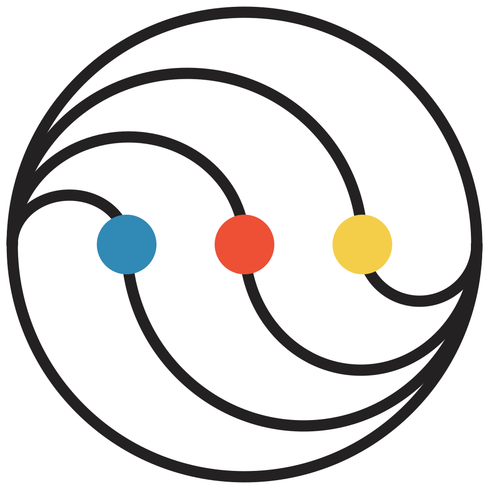
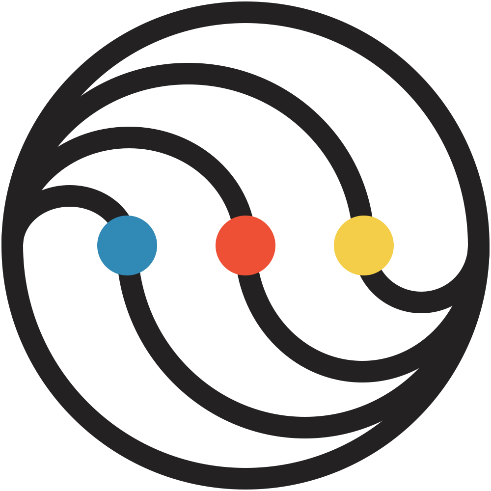

Standard
Stroke 23 · 64–159pxShown at 80pxCompact
Stroke 34 · 32–63px
Same geometry and colors. Stronger strokes help the smaller versions hold their shape.
The lines turn one way. The dots take the other. Blue and yellow flow around the center, stretching and gathering like liquid. Red stays still.


